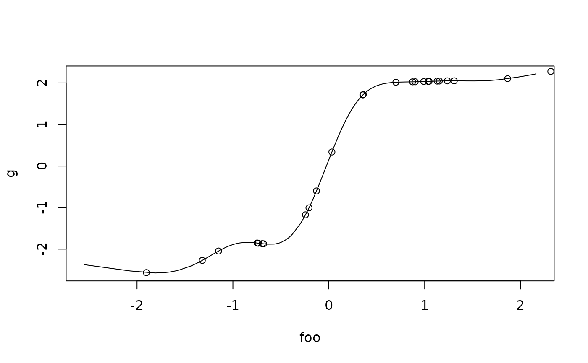

Predictions from a fitted CGAIM object - copied from cgaim:::predict.cgaim() and modified
Source:R/predict.R
predict.cgaim.RdUses a fitted cgaim object and computes prediction for the observed
data or new data. Predicts the response, indices or ridge functions values at
the provided data.
Arguments
- object
A
gaimobject.- newdata
A list or data.frame containing the new data to predict. If missing, fitted values from the model are returned.
- type
A character indicating the type of prediction to return.
type = "response"returns the predicted response.type = "terms", returns ridge and smooth functions evaluated at index predicted fornewdata.type = "scterms"is the same, except that terms are postmultiplied by their scaling coefficients beta.type = "indices"returns predicted indices values.- select
A numeric or character vector indicating terms to return for all types except
"response".- na.action
A function indicating how to treat NAs. See
na.fail.- ...
For compatibility with the default
predictmethod. Unused at the moment.
Value
When type = "response" returns a vector of predicted response.
When type = "terms" or "scterms", returns a matrix of
evaluated ridge and smooth terms. When type = "indices", returns a
matrix of evaluated indices.
Details
type = "terms" returns the scaled ridge functions, i.e.
before being multiplied by scaling coefficients beta.
Examples
## Load library
library(cgaim)
## Simulate some data
n <- 200
x1 <- rnorm(n)
x2 <- rnorm(n)
x3 <- rnorm(n)
x4 <- rnorm(n)
mu <- 4 * exp(8 * x1) / (1 + exp(8 * x1)) + exp(x3)
y <- mu + rnorm(n)
df1 <- data.frame(y, x1, x2, x3, x4)
## Fit an unconstrained the model
ans <- cgaim(y ~ g(x1, x2, label = "foo") + g(x3, x4, label = "bar"),
data = df1)
## Get fitted values
yhat <- predict(ans)
## Predict on new data
newdf <- as.data.frame(matrix(rnorm(100), 25, 4))
names(newdf) <- sprintf("x%i", 1:4)
# predicted response
ypred <- predict(ans, newdf)
# Indices
indices <- predict(ans, newdata = newdf, type = "indices")
# Ridge functions
funs <- predict(ans, newdata = newdf, type = "terms")
## Select specific terms
ind1 <- predict(ans, newdata = newdf, select = "foo", type = "indices")
fun1 <- predict(ans, newdata = newdf, select = "foo", type = "terms")
# Plot
plot(ans, select = "foo")
points(ind1, fun1)
## Scaled terms
fun2 <- predict(ans, newdata = newdf, select = "foo", type = "scterms")
# Plot
plot(ans, select = "foo", yscale = TRUE)
points(ind1, fun2)
